baie saint-laurent-2 : La Passion du Christ (CV2007, p. 78)
- 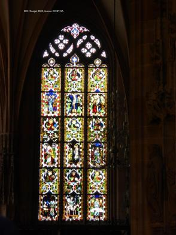 : Vue d'ensemble (CV2007, p. 78).
- 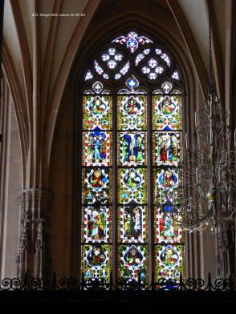 : Vue d'ensemble (sauf rangée inférieure) (CV2007, p. 78).
- 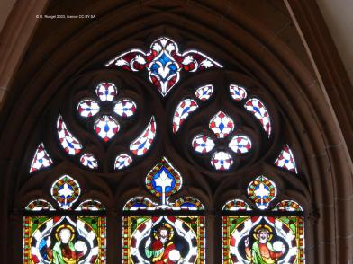 : Détail de la partie supérieure.
- 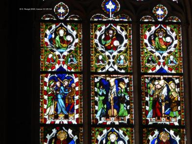 : Rangées 5 et 6.
- 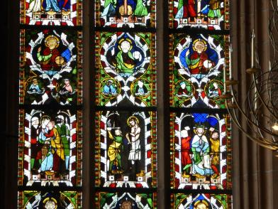 : Rangées 3 et 4.
- 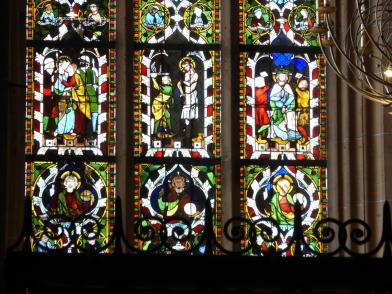 : Rangées 2 et 3.
- 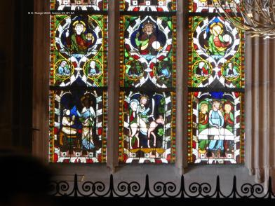 : Rangées 1 et 2.
- 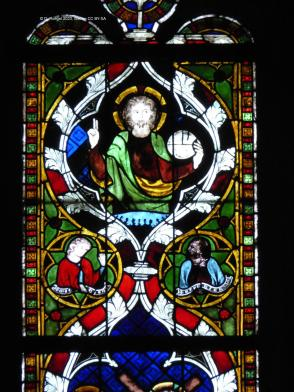 : Détail 6a : le Christ en médaillon (CV2007, p. 87).
- 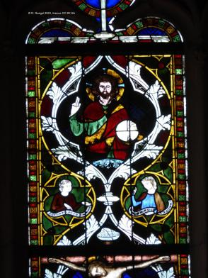 : Détail 6b : le Christ en médaillon (CV2007, p. 89).
- 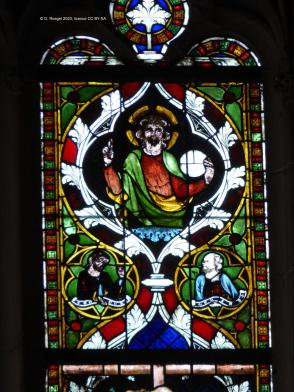 : Détail 6c : le Christ en médaillon (CV2007, p. 90).
- 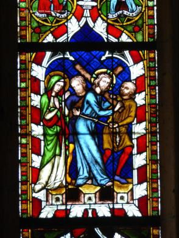 : Détail 5a : le portement de Croix (CV2007, p. 85).
- 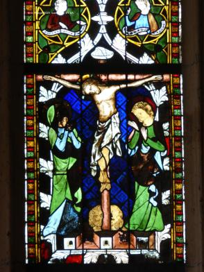 : Détail 5b : la crucifixion (CV2007, p. 85).
 : Détail 5c : la descente de Croix (CV2007, p. 86).
: Détail 5c : la descente de Croix (CV2007, p. 86).- 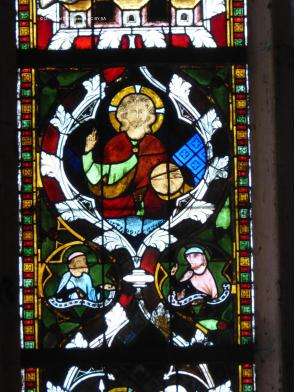 : Détail 4a : le Christ en médaillon (CV2007, p. 87).
 : Détail 4b : le Christ en médaillon (CV2007, p. 88).
: Détail 4b : le Christ en médaillon (CV2007, p. 88).- 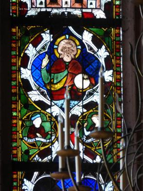 : Détail 4c : le Christ en médaillon (CV2007, p. 90).
- 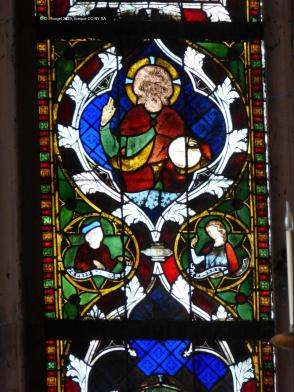 : Détail 4c : le Christ en médaillon (CV2007, p. 90).
- 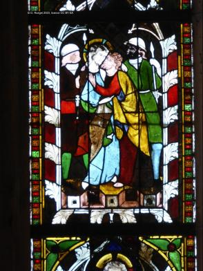 : Détail 3a : le baiser de Judas (CV2007, p. 83).
- 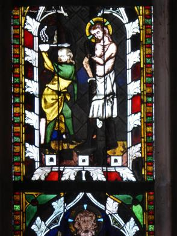 : Détail 3b : la flagellation (CV2007, p. 84).
- 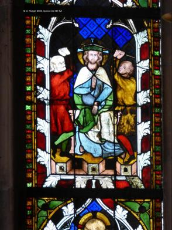 : Détail 3c : le couronnement d'épines (CV2007, p. 84).
- 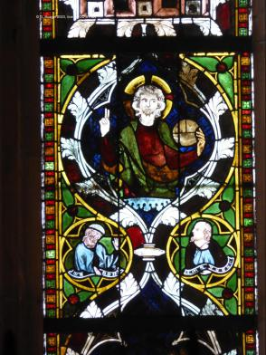 : Détail 2a : le Christ en médaillon (CV2007, p. 86).
- 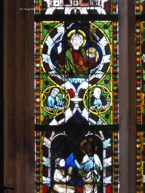 : Détail 2a : le Christ en médaillon (CV2007, p. 86).
- 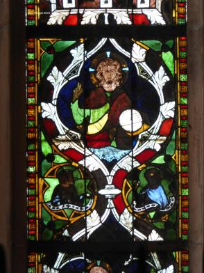 : Détail 2b : le Christ en médaillon (CV2007, p. 88).
 : Détail 2b : le Christ en médaillon (CV2007, p. 88).
: Détail 2b : le Christ en médaillon (CV2007, p. 88).- 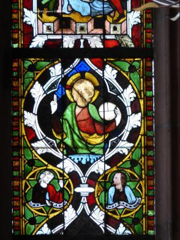 : Détail 2c : le Christ en médaillon (CV2007, p. 89).
- 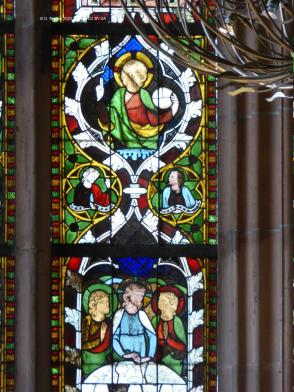 : Détail 2c : le Christ en médaillon (CV2007, p. 89).
- 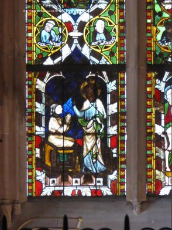 : Détail 1a : la résurrection de Lazare (CV2007, p. 82).
- 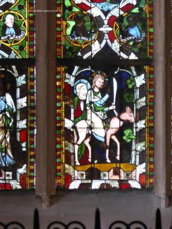 : Détail 1b : l'entrée à Jérusalem (CV2007, p. 82).
- 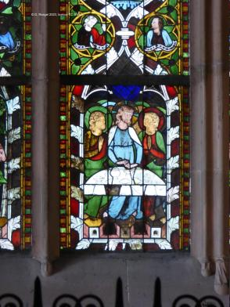 : Détail 1c : la Cène (CV2007, p. 83).
Copyright D. Roegel, 2023.
{kind=link}
{kind=link}
{kind=link}
{kind=link}
{kind=link}
{kind=link}
{kind=link}
{kind=link}
{kind=link}
{kind=link}
{kind=link}
{kind=link}
 : Détail 5c : la descente de Croix (CV2007, p. 86).
: Détail 5c : la descente de Croix (CV2007, p. 86).{kind=link}
 : Détail 4b : le Christ en médaillon (CV2007, p. 88).
: Détail 4b : le Christ en médaillon (CV2007, p. 88).{kind=link}
{kind=link}
{kind=link}
{kind=link}
{kind=link}
{kind=link}
{kind=link}
{kind=link}
 : Détail 2b : le Christ en médaillon (CV2007, p. 88).
: Détail 2b : le Christ en médaillon (CV2007, p. 88).{kind=link}
{kind=link}
{kind=link}
{kind=link}
{kind=link}